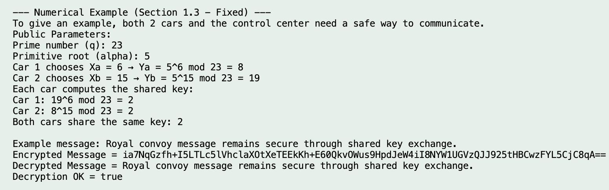
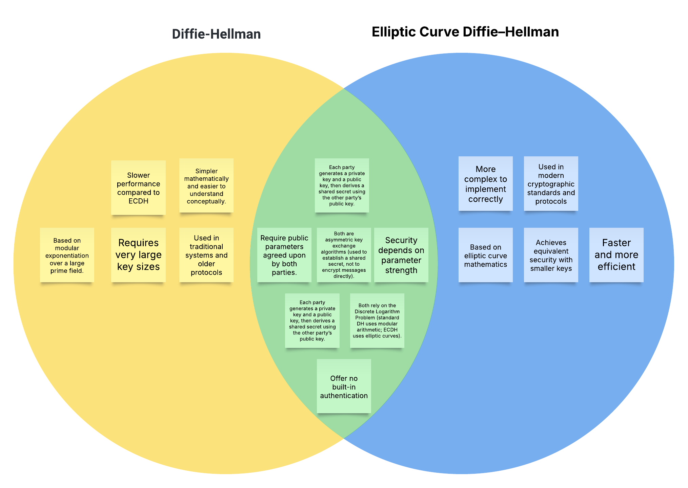
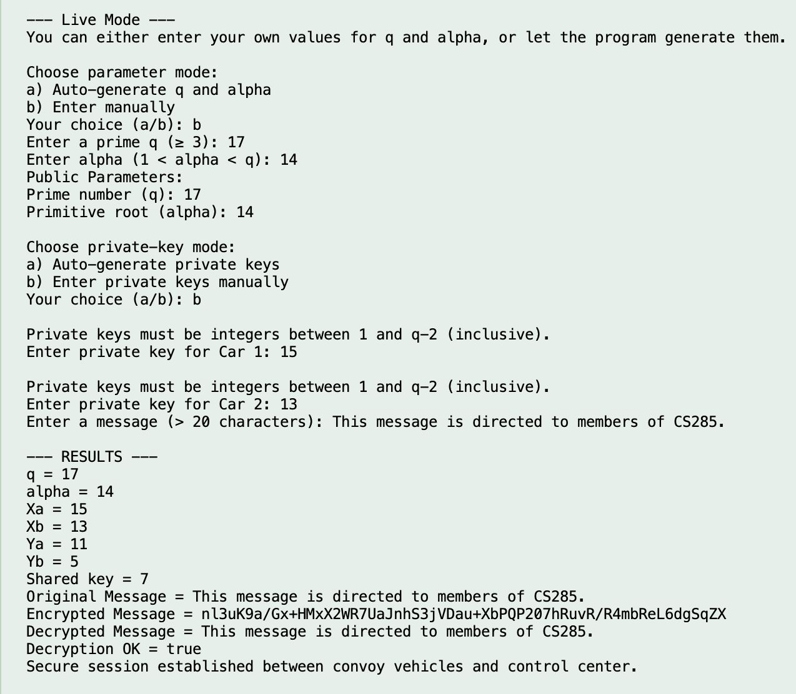
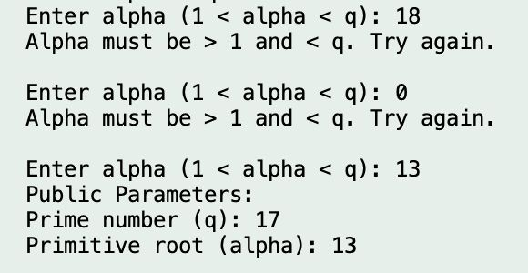

Implementation and Analysis in Java
Instructor: Dr.
College of Computer and Information Sciences (CCIS)
التنفيذ والتحليل بلغة جافا
المحاضر: د.
كلية علوم الحاسب والمعلومات (CCIS)
Jump to any section of the report:
انتقل إلى أي قسم في التقرير:
In today's digital world, secure communication is the need of the hour to protect sensitive information being exchanged over public networks. The Diffie-Hellman key exchange algorithm allows two parties to agree on a shared secret key without actually exchanging it, and forms a basis for many of today's encryption schemes.
The following Java code for the Diffie–Hellman implementation is provided for CS285, Discrete Mathematics for Computing. The developed system incorporates fundamental mathematical concepts regarding modular arithmetic and exponentiation. The system simulates secure key generation and exchange between two entities using the Diffie–Hellman key exchange method. A simple encryption and decryption mechanism has also been provided to illustrate how the derived shared key can be used to secure messages.
We divide the program into the following classes: Parameters handles all public values, KeyExchange generates and computes keys, Encryptor encrypts messages, and Validator, Helpers, and Utils ensure correct input handling and output formatting. The Main class integrates all components of the system and allows users to test both a predefined numerical example and a live interactive mode.
The project ties together theoretical mathematics and programming in practice, showing how secure key exchange and encryption work in real-world systems.
في عالمنا الرقمي اليوم أصبحت الاتصالات الآمنة ضرورة لحماية المعلومات الحساسة التي يتم تبادلها عبر الشبكات العامة. تتيح خوارزمية تبادل المفاتيح ديفي–هيلمان لطرفين الاتفاق على مفتاح سري مشترك دون تبادله بشكل مباشر، وهي أساس لكثير من أنظمة التشفير الحديثة.
تقدم شيفرة جافا التالية كتطبيق لطريقة ديفي–هيلمان ضمن مقرر CS285 (الرياضيات المتقطعة للحوسبة). يعتمد النظام على مفاهيم رياضية أساسية مثل الحساب المعياري والأسس. يحاكي النظام توليد المفاتيح وتبادلها بشكل آمن بين كيانين باستخدام ديفي–هيلمان، كما يتضمن آلية بسيطة للتشفير وفك التشفير لتوضيح كيفية استخدام المفتاح المشترك لحماية الرسائل.
تم تقسيم البرنامج إلى عدة أصناف: يتولى Parameters القيم العامة، ويقوم KeyExchange بتوليد وحساب المفاتيح، ويقوم Encryptor بتشفير الرسائل، بينما تضمن Validator و Helpers و Utils صحة المدخلات وتنسيق المخرجات. يقوم الصنف Main بدمج جميع المكونات ويوفر وضع المثال العددي ووضعا تفاعليا مباشرا.
يربط هذا المشروع بين النظرية الرياضية والتطبيق البرمجي لإظهار كيفية عمل تبادل المفاتيح والتشفير في الأنظمة الواقعية.
The Diffie-Hellman key exchange is a cryptography technique whose main purpose is to allow two parties to exchange a key that can be used for encrypting messages. This shared key can be used in public channels that ensures no one unauthorized can read it. The key concept was developed by Ralph Merkle but was published by Whitfield Diffie and Martin Hellman in 1976, which is why it's named after them.
يعد تبادل مفاتيح ديفي–هيلمان أسلوبا في علم التشفير يهدف إلى تمكين طرفين من إنشاء مفتاح مشترك يمكن استخدامه لتشفير الرسائل. يتم إنشاء المفتاح عبر قناة عامة بحيث لا يستطيع غير المصرح لهم استخلاصه. طورت الفكرة الأساسية بواسطة رالف ميركل، ثم نشرت رسميا بواسطة ويتفيلد ديفي ومارتن هيلمان عام 1976، ومن هنا جاءت التسمية.
The Diffie–Hellman key exchange algorithm allows two parties to create a common secret over insecure channels by performing modular exponentiation on agreed public parameters.
Even though q, α, Ya, and Yb are public, inferring Xa or Xb is computationally infeasible for large, well-chosen parameters due to the Discrete Logarithm Problem.
تمكن خوارزمية ديفي–هيلمان طرفين من إنشاء سر مشترك عبر قناة غير آمنة من خلال إجراء عمليات الأسس المعيارية على معلمات عامة يتم الاتفاق عليها مسبقا.
رغم أن q و α و Ya و Yb قيم عامة، فإن استنتاج Xa أو Xb غير عملي حسابيا عند استخدام معلمات كبيرة ومختارة بشكل صحيح بسبب صعوبة مسألة اللوغاريتم المتقطع.
Two cars and a control center must communicate securely during a royal convoy.

Numerical example with fixed values (q=23, α=5).
تحتاج سيارتان ومركز تحكم إلى التواصل بشكل آمن أثناء موكب رسمي.
مثال عددي بقيم ثابتة (q=23 و α=5).
While Diffie–Hellman provides a strong mathematical basis for key exchange, its security depends on careful parameter management and the inclusion of authentication to avoid interception or impersonation.
رغم أن ديفي–هيلمان يقدم أساسا رياضيا قويا لتبادل المفاتيح، إلا أن الأمان يعتمد على إدارة المعلمات بعناية وإضافة طبقة توثيق لتجنب الاعتراض أو الانتحال.
Elliptic Curve Diffie–Hellman (ECDH) follows the same principle as DH but replaces modular arithmetic with elliptic-curve mathematics, providing stronger security with smaller key sizes.

Overlap between DH and ECDH.
يتبع ECDH نفس مبدأ DH لكنه يستبدل الحساب المعياري برياضيات المنحنيات الإهليلجية، مما يوفر أمانا أعلى بمفاتيح أصغر.
منطقة التقاطع بين DH و ECDH.
The program is organized into classes: Main (driver), Parameters (public values q and α), KeyExchange (private/public keys and shared secret), Encryptor (demo XOR encryption keyed by SHA-256(shared secret)), Validator (prime/range/message validations), Utils (helpers), and Helpers (interactive prompts).
يتكون البرنامج من عدة أصناف: Main (المشغل)، Parameters (القيم العامة q و α)، KeyExchange (المفاتيح الخاصة والعامة والسر المشترك)، Encryptor (تشفير XOR توضيحي مع مفتاح مشتق من SHA-256 للسر المشترك)، Validator (التحقق من القيم)، Utils (مساعدات عامة)، و Helpers (مطالبات تفاعلية).
The private key is uniform in [1, q−2]. The public key is computed as Y = α^x mod q.
For demonstration, we hash the shared secret to a fixed-length byte key and XOR the plaintext bytes, then Base64-encode.
Using the same hash and XOR reverses the demo cipher and recovers the message.
يتم اختيار المفتاح الخاص بشكل منتظم ضمن المجال [1, q−2]، ثم يحسب المفتاح العام وفق Y = α^x mod q.
لأغراض التوضيح، يتم تجزئة السر المشترك لإنتاج مفتاح بطول ثابت ثم إجراء XOR على بايتات النص، وبعدها ترميز الناتج بصيغة Base64.
استخدام نفس التجزئة وعملية XOR يعكس التشفير ويسترجع الرسالة الأصلية.
Non-prime q, invalid α ranges, or short messages previously crashed the program; robust prompting loops now enforce constraints and re-ask on error.
Standardized method names and types across modules to simplify the Main driver and reduce coupling issues.
Adopted Java’s modPow to avoid overflow and correctness issues for public/shared key
derivations.
Enforced UTF-8 and Base64 to keep encryption/decryption round-trips stable across platforms.
كانت القيم غير الأولية لـ q أو قيم α خارج النطاق أو الرسائل القصيرة تسبب أعطالا؛ تمت إضافة حلقات إدخال تتحقق من الشروط وتعيد الطلب عند الخطأ.
تم توحيد أسماء الدوال وأنواع البيانات بين المكونات لتبسيط الصنف Main وتقليل التشابك.
تم الاعتماد على modPow في جافا لتجنب مشاكل الفيض وضمان صحة اشتقاق المفاتيح.
تم اعتماد UTF-8 و Base64 لضمان ثبات عملية التشفير وفك التشفير عبر المنصات.

Manual input of q, α, and message – valid parameters and correct key exchange.
In manual live mode, users provide q, α, and the message. The program validates inputs, computes public keys, derives the shared key, encrypts, and then decrypts the message. Successful decryption confirms both parties derived the same shared key.
This confirms that the program correctly implements the mathematical logic of the Diffie–Hellman key exchange algorithm.

Invalid α range, the system rejects and re-prompts until valid.
This test demonstrates input validation. If α is outside (1 < α < q), the program rejects it and re-prompts, preventing invalid configurations.
The Validator and Helpers classes enforce constraints for q and α before
continuing.
This example uses small integer values to visually demonstrate how two users derive the same shared secret key.
في الوضع المباشر اليدوي، يقوم المستخدم بإدخال q و α والرسالة. يتحقق النظام من صحة المدخلات، ثم يحسب المفاتيح العامة ويشتق المفتاح المشترك ويجري التشفير وفك التشفير. نجاح فك التشفير يثبت أن الطرفين حصلا على نفس المفتاح.
يؤكد ذلك أن البرنامج يطبق المنطق الرياضي لتبادل مفاتيح ديفي–هيلمان بشكل صحيح.
توضح هذه الحالة التحقق من المدخلات. إذا كانت α خارج (1 < α < q) يتم رفضها وإعادة الطلب لتجنب إعدادات غير صحيحة.
تعمل Validator و Helpers على فرض الشروط الخاصة بـ q و α قبل المتابعة.
يستخدم هذا المثال أعدادا صغيرة لتوضيح كيفية اشتقاق نفس السر المشترك بصريا.
All members collaborated on the Java implementation and the report. Roles below summarize primary ownership while acknowledging shared reviews and integration work.
Established program scaffolding for public parameters and helper routines, including generation of q and α and formatted output utilities.
Implemented DH mathematics (private/public/shared keys) and authored the guided numerical example; validated modular arithmetic correctness.
Built the encryption/decryption demo atop the shared secret and executed test runs; documented security considerations.
Integrated modules into the driver, implemented validations and resilient input loops, coordinated final testing, and unified the report tone and structure.
ساهم جميع الأعضاء في تنفيذ المشروع بلغة جافا وإعداد التقرير. توضح النقاط التالية المسؤوليات الأساسية مع الإشارة إلى العمل الجماعي في المراجعة والدمج.
إنشاء هيكل البرنامج للقيم العامة والدوال المساعدة بما يشمل توليد q و α وتنسيق المخرجات.
تنفيذ رياضيات DH (المفاتيح الخاصة والعامة والمشتركة) وكتابة المثال العددي والتحقق من صحة الحسابات.
بناء تجربة التشفير وفك التشفير بالاعتماد على المفتاح المشترك وتنفيذ حالات الاختبار وتوثيق اعتبارات الأمان.
دمج المكونات في المشغل وتطبيق التحقق من المدخلات وتنظيم الاختبارات النهائية وتوحيد أسلوب التقرير وبنيته.
The project demonstrates how two parties can establish a shared secret over an insecure network using modular exponentiation and carefully validated parameters. It also highlights the importance of authentication wrappers and ephemeral keys to achieve practical security goals.
Extend with authenticated key exchange, replace the demo XOR with AES-GCM using a KDF, and add ECDH support with standardized curves.
يوضح المشروع كيفية تمكين طرفين من إنشاء سر مشترك عبر شبكة غير آمنة باستخدام الأسس المعيارية ومعلمات تم التحقق منها بعناية. كما يبرز أهمية إضافة التوثيق والمفاتيح المؤقتة لتحقيق أهداف أمان عملية.
إضافة تبادل مفاتيح موثق، واستبدال XOR التوضيحي بـ AES-GCM باستخدام KDF، وإضافة دعم ECDH عبر منحنيات معيارية.